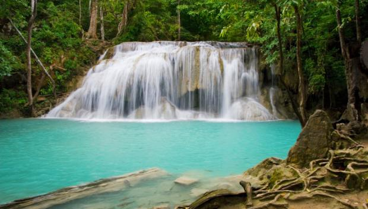
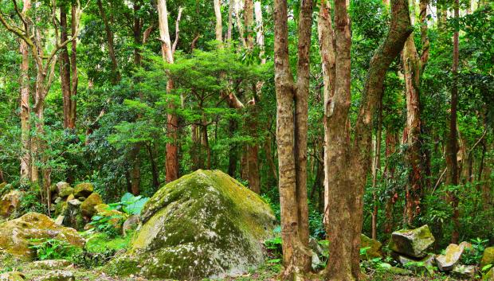
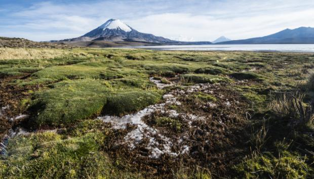

¡Bienvenido a la página 3! En esta página, te llevamos a una aventura en el bosque. Sumérgete en la tranquilidad de la naturaleza, escucha el susurro de los árboles y descubre la belleza oculta de los bosques.
1. Erawan, Tailandia
Al salir de Bangkok, la capital del país, 120 kilómetros al oeste nos encontramos con la región de Kachanburi. Esta posee siete parques nacionales, pero el de Erawan es sin duda alguna el más impresionante. El bosque parece haber sido cubierto por una cascada de esmeraldas.
2. Paimpont, Francia
Puede que muchos conozcan mejor este bosque por el nombre del Brocelianda. Este bosque mítico de la leyenda del mago Merlín forma parte de la riquísima Materia de Bretaña. Está ubicado en el departamento de Ille y Vilaine, en la región de Bretaña, a unos 30 km al suroeste de la ciudad de Rennes.
3. Parque Nacional Conguillío, Chile
La zona de la Araucanía de Chile, caracteriza el paisaje de este parque nacional, ubicado al sur de la capital. Este bosque es cruzado por senderos que te llevan al lago Conguillío y a los pies del volcán Llaima. En las rutas guiadas puedes ver animales singulares como el cisne de cuello negro y el tollo de agua dulce.
